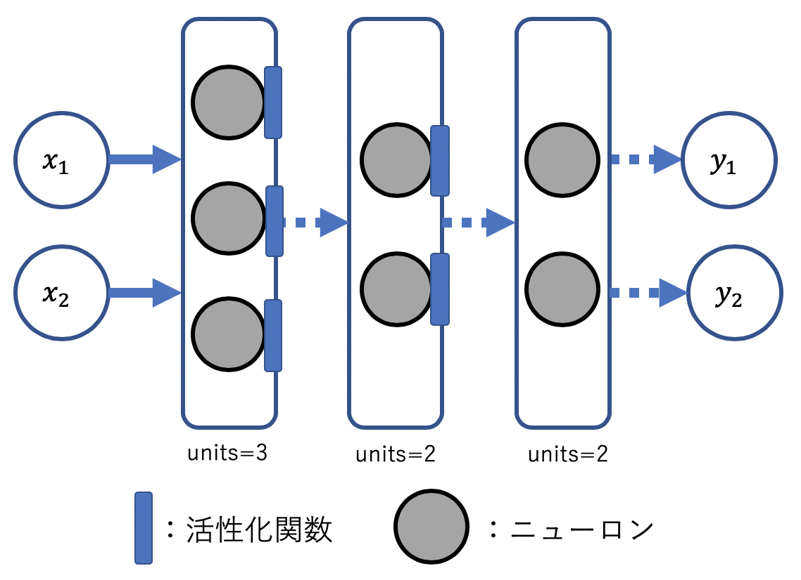

<!DOCTYPE html>
<html>
  <head>
    <title>ゼロから作るDeep Learningとともに学ぶフレームワーク（3層ニューラルネットワーク ＆ 手書き数字認識編） – きままにNLP – A Technical Blog</title>

        <meta charset="utf-8" />
    <meta content='text/html; charset=utf-8' http-equiv='Content-Type'>
    <meta http-equiv='X-UA-Compatible' content='IE=edge'>
    <meta name='viewport' content='width=device-width, initial-scale=1.0, maximum-scale=1.0'>

    
    <meta name="description" content="はじめに

このシリーズでは，深層学習の入門書として有名な，「ゼロから作るDeep Learning」（以下，ゼロから〜）と同時並行で，フレームワークを学習し，その定着を目指します．

" />
    <meta property="og:description" content="はじめに

このシリーズでは，深層学習の入門書として有名な，「ゼロから作るDeep Learning」（以下，ゼロから〜）と同時並行で，フレームワークを学習し，その定着を目指します．

" />
    
    <meta name="author" content="きままにNLP" />

    
    <meta property="og:title" content="ゼロから作るDeep Learningとともに学ぶフレームワーク（3層ニューラルネットワーク ＆ 手書き数字認識編）" />
    <meta property="twitter:title" content="ゼロから作るDeep Learningとともに学ぶフレームワーク（3層ニューラルネットワーク ＆ 手書き数字認識編）" />
    

    <!--[if lt IE 9]>
      <script src="http://html5shiv.googlecode.com/svn/trunk/html5.js"></script>
    <![endif]-->

    <link rel="stylesheet" type="text/css" href="/style.css" />
    <link rel="alternate" type="application/rss+xml" title="きままにNLP - A Technical Blog" href="/feed.xml" />

    <!-- Created with Jekyll Now - http://github.com/barryclark/jekyll-now -->

    <!-- Favicon head tag -->
    <link rel="icon" href="https://pbs.twimg.com/profile_images/1112635060480442368/Ou7bjYFs_400x400.png" type="image/x-icon">

    <!-- Begin Jekyll SEO tag v2.6.0 -->
<title>ゼロから作るDeep Learningとともに学ぶフレームワーク（3層ニューラルネットワーク ＆ 手書き数字認識編） | きままにNLP</title>
<meta name="generator" content="Jekyll v3.8.5" />
<meta property="og:title" content="ゼロから作るDeep Learningとともに学ぶフレームワーク（3層ニューラルネットワーク ＆ 手書き数字認識編）" />
<meta property="og:locale" content="ja_JP" />
<meta name="description" content="「ゼロから作るDeep Learning」とともに深層学習フレームワークを学ぶプロジェクト第二弾として，Kerasで3層ニューラルネットワークの実装と手書き数字認識に取り組みます．" />
<meta property="og:description" content="「ゼロから作るDeep Learning」とともに深層学習フレームワークを学ぶプロジェクト第二弾として，Kerasで3層ニューラルネットワークの実装と手書き数字認識に取り組みます．" />
<link rel="canonical" href="http://localhost:4000/DL-Intro-2/" />
<meta property="og:url" content="http://localhost:4000/DL-Intro-2/" />
<meta property="og:site_name" content="きままにNLP" />
<meta property="og:type" content="article" />
<meta property="article:published_time" content="2019-04-19T00:00:00+09:00" />
<script type="application/ld+json">
{"description":"「ゼロから作るDeep Learning」とともに深層学習フレームワークを学ぶプロジェクト第二弾として，Kerasで3層ニューラルネットワークの実装と手書き数字認識に取り組みます．","@type":"BlogPosting","url":"http://localhost:4000/DL-Intro-2/","headline":"ゼロから作るDeep Learningとともに学ぶフレームワーク（3層ニューラルネットワーク ＆ 手書き数字認識編）","dateModified":"2019-04-19T00:00:00+09:00","datePublished":"2019-04-19T00:00:00+09:00","mainEntityOfPage":{"@type":"WebPage","@id":"http://localhost:4000/DL-Intro-2/"},"@context":"https://schema.org"}</script>
<!-- End Jekyll SEO tag -->

    <!-- Google Adsense-->
    <script async src="//pagead2.googlesyndication.com/pagead/js/adsbygoogle.js"></script>
    <script>
      (adsbygoogle = window.adsbygoogle || []).push({
        google_ad_client: "ca-pub-1838422896597988",
        enable_page_level_ads: true
      });
    </script>
  </head>

  <body>
    <div class="wrapper-masthead">
      <div class="container">
        <header class="masthead clearfix">
          <a href="/" class="site-avatar"></a>

          <div class="site-info">
            <h1 class="site-name"><a href="/">きままにNLP</a></h1>
            <p class="site-description">A Technical Blog</p>
          </div>

          <nav>
            <a href="/">Blog</a>
            <a href="/about">About</a>
          </nav>
        </header>
      </div>
    </div>

    <div id="main" role="main" class="container">
      <style type="text/css">
  #toc ul, ol{
  color: #1e366a;
  padding: 0.1em 0 0.1em 1.0em;
  font-size: 90%
  }
  
  #toc ul li, ol li{
    line-height: 1.5;
    padding: 0.1em 0;
  }

  #box div{
   border-top: solid #1e366a 1px;/*上のボーダー*/
   border-bottom: solid #1e366a 1px; /* 下側の1本線 */
   padding: 0.1em 0;
  }
</style>

<article class="post">
  <h1>ゼロから作るDeep Learningとともに学ぶフレームワーク（3層ニューラルネットワーク ＆ 手書き数字認識編）</h1>
  <div id="box">
    <div id="toc">
      <ul class="date">
  <li><a href="#はじめに">はじめに</a></li>
  <li><a href="#1-3層ニューラルネットワークの実装">1. 3層ニューラルネットワークの実装</a>
    <ul>
      <li><a href="#11-プロジェクトの作成">1.1 プロジェクトの作成</a></li>
      <li><a href="#12-モデルの作成">1.2 モデルの作成</a>
        <ul>
          <li><a href="#121-レイヤー--numpyを読み込む">1.2.1 レイヤー &amp; NumPyを読み込む</a></li>
          <li><a href="#122-各種レイヤーを定義する">1.2.2 各種レイヤーを定義する</a></li>
          <li><a href="#123-モデルを定義する">1.2.3 モデルを定義する</a></li>
          <li><a href="#124-重みを設定する">1.2.4 重みを設定する</a></li>
        </ul>
      </li>
      <li><a href="#13-テストする">1.3 テストする</a></li>
    </ul>
  </li>
  <li><a href="#2-手書き数字認識mnist">2. 手書き数字認識（MNIST）</a>
    <ul>
      <li><a href="#21-mnistデータセットの読み込み">2.1 MNISTデータセットの読み込み</a></li>
      <li><a href="#22-データセットの前処理">2.2 データセットの前処理</a></li>
      <li><a href="#22-モデルの改良">2.2 モデルの改良</a></li>
      <li><a href="#23-重みファイルの読み込み">2.3 重みファイルの読み込み</a></li>
      <li><a href="#24-テストする">2.4 テストする</a></li>
    </ul>
  </li>
  <li><a href="#まとめ">まとめ</a></li>
  <li><a href="#ソースコード">ソースコード</a></li>
</ul>
    </div>
  </div> 
  <div class="entry">
    <h1 id="はじめに">はじめに</h1>
<hr />
<p>このシリーズでは，深層学習の入門書として有名な，「ゼロから作るDeep Learning」（以下，ゼロから〜）と同時並行で，フレームワークを学習し，その定着を目指します．</p>

<p>前回の<a href="https://gucci-j.github.io/DL-Intro-1/">第一弾: パーセプトロン編</a>に目を通していない方は，先に目を通しておくことをおすすめします．</p>

<p>それでは，今回は3層ニューラルネットワークをKerasで実装し，実際に手書き数字認識（MNISTデータセットの分類）をしていきましょう！</p>

<p><em>（3層ニューラルネットワーク）参考: ゼロから〜のP58〜65</em><br />
<em>（MNIST）参考: ゼロから〜のP72〜81</em></p>

<h1 id="1-3層ニューラルネットワークの実装">1. 3層ニューラルネットワークの実装</h1>
<hr />
<h2 id="11-プロジェクトの作成">1.1 プロジェクトの作成</h2>
<p>まず，3層ニューラルネットワーク実装用のプロジェクトを作成してください．<br />
以下本章では，<code class="highlighter-rouge">three_nn.py</code>を作成するものとして進めていきます．</p>

<h2 id="12-モデルの作成">1.2 モデルの作成</h2>
<ul>
  <li>
    <p>今回の実装からは全てFunctional APIを用いたモデル実装を行います．<br />
Sequentialモデルによる実装は行いませんので，あらかじめご了承ください．</p>
  </li>
  <li>
    <p>これから実装する3層ニューラルネットワークの概念図を以下に示します．<br />
実装の際の参考にしてください．</p>
  </li>
</ul>

<p></p>

<h3 id="121-レイヤー--numpyを読み込む">1.2.1 レイヤー &amp; NumPyを読み込む</h3>
<hr />
<p>まず，前回と同じように，実装に必要なレイヤーとNumPyを読み込みます．</p>

<div class="highlighter-rouge"><div class="highlight"><pre class="highlight"><code>from keras import Model
from keras.layers import Input, Dense

import numpy as np
</code></pre></div></div>

<h3 id="122-各種レイヤーを定義する">1.2.2 各種レイヤーを定義する</h3>
<hr />
<ul>
  <li>
    <p>3層のニューラルネットワークなので，それと同数の3つのDenseレイヤーのインスタンスを生成します．</p>
  </li>
  <li>
    <p><code class="highlighter-rouge">units</code>は各層におけるニューロンの数を表しています．</p>
  </li>
  <li>
    <p>活性化関数については，ゼロから〜では<code class="highlighter-rouge">sigmoid</code>関数が使用されているので，ここでも<code class="highlighter-rouge">sigmoid</code>を活用します．</p>
  </li>
  <li>
    <p>下の例では，簡単のため入れ子式に活性化関数を定義しましたが，活性化関数をレイヤーインスタンスとして定義することもできます．</p>
  </li>
</ul>

<div style="text-align: center">＜活性化関数を入れ子式に定義する例＞</div>
<div class="highlighter-rouge"><div class="highlight"><pre class="highlight"><code>_input = Input(shape=(2, ))
_layer1 = Dense(units=3, activation='sigmoid')(_input)
_layer2 = Dense(units=2, activation='sigmoid')(_layer1)
_output = Dense(units=2)(_layer2)
</code></pre></div></div>

<div style="text-align: center">＜活性化関数をインスタンスとして定義する例＞</div>
<div class="highlighter-rouge"><div class="highlight"><pre class="highlight"><code>from keras.layers import Activation
_input = Input(shape=(2, ))
_layer1 = Dense(units=3)(_input)
_activ1 = Activation('sigmoid')(_layer1)
_layer2 = Dense(units=2)(_activ1)
_activ2 = Activation('sigmoid')(_layer2)
_output = Dense(units=2)(_activ2)
</code></pre></div></div>
<p><em>参考: <a href="https://keras.io/ja/activations/">https://keras.io/ja/activations/</a></em></p>

<h3 id="123-モデルを定義する">1.2.3 モデルを定義する</h3>
<hr />
<ul>
  <li>
    <p>前回と同様に，入力のテンソルと出力のテンソルを<code class="highlighter-rouge">Model</code>に渡すことで，モデルを定義します．</p>
  </li>
  <li>
    <p><code class="highlighter-rouge">model.summary()</code>でモデルの状態を確認することができます．</p>
  </li>
</ul>

<div class="highlighter-rouge"><div class="highlight"><pre class="highlight"><code><span class="k">model</span> <span class="p">=</span> <span class="k">Model</span><span class="p">(</span><span class="n">inputs</span><span class="p">=</span><span class="n">_input</span><span class="p">,</span> <span class="n">outputs</span><span class="p">=</span><span class="n">_output</span><span class="p">)</span>
<span class="k">model</span><span class="p">.</span><span class="n">summary</span><span class="p">()</span> <span class="p">#</span> <span class="err">モデルの状態をみる</span>
</code></pre></div></div>

<p>Output:</p>
<div class="highlighter-rouge"><div class="highlight"><pre class="highlight"><code>_________________________________________________________________
Layer (type)                 Output Shape              Param #
=================================================================
input_1 (InputLayer)         (None, 2)                 0
_________________________________________________________________
dense_1 (Dense)              (None, 3)                 9
_________________________________________________________________
dense_2 (Dense)              (None, 2)                 8
_________________________________________________________________
dense_3 (Dense)              (None, 2)                 6
=================================================================
Total params: 23
Trainable params: 23
Non-trainable params: 0
_________________________________________________________________
</code></pre></div></div>

<h3 id="124-重みを設定する">1.2.4 重みを設定する</h3>
<hr />
<ul>
  <li>
    <p>ゼロから〜では重みの初期化を定義しているので，本実装でも事前に重みを設定します．</p>
  </li>
  <li>
    <p>Kerasでは，重みは入力層から順にNumPyの配列で保持されています．<br />
したがって，重みを設定する際には，順当に重みの配列をNumPy配列で定義して，そのリストを渡せばよいです．</p>
  </li>
  <li>
    <p>重みの設定には，<code class="highlighter-rouge">model.set_weights()</code>を使用します．<br />
引数は重みの入ったリストです．</p>
  </li>
</ul>

<div class="highlighter-rouge"><div class="highlight"><pre class="highlight"><code>w1 = np.array([[0.1, 0.3, 0.5], [0.2, 0.4, 0.6]])
b1 = np.array([0.1, 0.2, 0.3])
w2 = np.array([[0.1, 0.4], [0.2, 0.5], [0.3, 0.6]])
b2 = np.array([0.1, 0.2])
w3 = np.array([[0.1, 0.3], [0.2, 0.4]])
b3 = np.array([0.1, 0.2])
weight_array = [w1, b1, w2, b2, w3, b3]

model.set_weights(weight_array)
print(model.get_weights())
</code></pre></div></div>
<p><em>参照: ゼロから〜 P65</em></p>

<p>Output:</p>
<div class="highlighter-rouge"><div class="highlight"><pre class="highlight"><code>[array([[0.1, 0.3, 0.5], [0.2, 0.4, 0.6]], dtype=float32), 
    array([0.1, 0.2, 0.3], dtype=float32), 
    array([[0.1, 0.4], [0.2, 0.5], [0.3, 0.6]], dtype=float32), 
    array([0.1, 0.2], dtype=float32), 
    array([[0.1, 0.3], [0.2, 0.4]], dtype=float32), 
    array([0.1, 0.2], dtype=float32)]
</code></pre></div></div>

<h2 id="13-テストする">1.3 テストする</h2>
<p>それでは，作成したモデルをテストしましょう．<br />
作成したモデルのテストには，前回と同様に，<code class="highlighter-rouge">model.predict()</code>を使用します．</p>

<p>テストデータは，ゼロから〜 P65に示されているものと同一のものを使用します．</p>
<div class="highlighter-rouge"><div class="highlight"><pre class="highlight"><code>X = np.array([[1.0, 0.5]])
Y = model.predict(X)

print(Y)
</code></pre></div></div>

<p>Output:</p>
<div class="highlighter-rouge"><div class="highlight"><pre class="highlight"><code>[[0.3168271 0.6962791]]
</code></pre></div></div>

<p>見事，ゼロから〜 P65に示されている出力値と同一の値を得ることができました！</p>

<h1 id="2-手書き数字認識mnist">2. 手書き数字認識（MNIST）</h1>
<hr />
<p>ここからは，今実装した3層ニューラルネットワークを活用して，手書き数字を実際に分類していきます．</p>

<p><em>参考: ゼロから〜のP72〜81</em></p>
<h2 id="21-mnistデータセットの読み込み">2.1 MNISTデータセットの読み込み</h2>
<p>Kerasでは，MNISTデータセットは簡単にダウンロード&amp;呼び出しできるようになっています．</p>

<p><code class="highlighter-rouge">mnist_nn.py</code>を作成して，以下を入力し動作させてみてください．</p>

<div class="highlighter-rouge"><div class="highlight"><pre class="highlight"><code>from keras.datasets import mnist
(x_train, y_train), (x_test, y_test) = mnist.load_data()

print(x_train.shape)
print(y_train.shape)
</code></pre></div></div>
<p><em>参照: <a href="https://keras.io/ja/datasets/#mnist">https://keras.io/ja/datasets/#mnist</a></em></p>

<p>Output:</p>
<div class="highlighter-rouge"><div class="highlight"><pre class="highlight"><code>(60000, 28, 28)
(60000,)
</code></pre></div></div>

<p>(<strong>注意</strong>) Kerasの<code class="highlighter-rouge">mnist.load_data()</code>は，「正規化されていない &amp; 2次元配列」の状態のリストが返ってきます．ゼロから〜のP73の挙動とは異なるので，注意してください．</p>

<p>ここで，データセットが<code class="highlighter-rouge">train</code>と<code class="highlighter-rouge">test</code>の二つに分割されていることに気がつくと思います．これは，機械学習においてはモデルの汎化性能を測定するために，通常データセットを訓練データとテストデータの二つ（もしくはそれ以上）に分割するためです．詳しくは，ゼロから〜の第4章を見てください．</p>

<h2 id="22-データセットの前処理">2.2 データセットの前処理</h2>
<p>モデルの推論処理においてMNISTデータセットを活用するので，「正規化 &amp; 一次元配列化」の処理を行っておきます．</p>

<ul>
  <li>
    <p>配列の形状変換は<code class="highlighter-rouge">.reshape</code>メソッドで行えます．<br />
引数は変換後の配列形状です．</p>
  </li>
  <li>
    <p>正規化処理のために，リストをfloat型に変換します．<br />
型変換は，<code class="highlighter-rouge">.astype</code>メソッドで行えます．</p>
  </li>
</ul>

<div class="highlighter-rouge"><div class="highlight"><pre class="highlight"><code># 一次元配列にする
x_train = x_train.reshape(60000, 784)
x_test = x_test.reshape(10000, 784)

# 正規化処理
x_train = x_train.astype('float')
x_test = x_test.astype('float')
x_train /= 255.
x_test /= 255.

print(x_train.shape)
</code></pre></div></div>

<p>Output:</p>
<div class="highlighter-rouge"><div class="highlight"><pre class="highlight"><code>(60000, 784)
</code></pre></div></div>
<p>きちんと一次元配列に変換されていることが確認できました．<br />
正規化されているかどうかは，配列の要素のうち一つを表示させて確認してみてください．</p>

<h2 id="22-モデルの改良">2.2 モデルの改良</h2>
<p><code class="highlighter-rouge">three_nn.py</code>でMNISTを分類できるように，以下の2点を改良します． <br />
改良したものは，<code class="highlighter-rouge">mnist_nn.py</code>に追記してください．</p>

<ul>
  <li>
    <p>ゼロから〜のP76と合わせて，一層目の全結合層のunit数を50，二層目を100とし，出力層は10とします．</p>
  </li>
  <li>
    <p>MNISTデータセットの分類は「<strong>分類問題</strong>」であるため，出力層にsoftmax層を追加します．</p>
  </li>
</ul>

<div class="highlighter-rouge"><div class="highlight"><pre class="highlight"><code><span class="k">from</span> <span class="n">keras</span> <span class="n">import</span> <span class="k">Model</span>
<span class="k">from</span> <span class="n">keras</span><span class="p">.</span><span class="n">layers</span> <span class="n">import</span> <span class="n">Input</span><span class="p">,</span> <span class="n">Dense</span><span class="p">,</span> <span class="n">Activation</span>
<span class="n">import</span> <span class="n">numpy</span> <span class="k">as</span> <span class="n">np</span>

<span class="n">_input</span> <span class="p">=</span> <span class="n">Input</span><span class="p">(</span><span class="n">shape</span><span class="p">=(</span><span class="m">784</span><span class="p">,</span> <span class="p">))</span>
<span class="n">_hidden</span> <span class="p">=</span> <span class="n">Dense</span><span class="p">(</span><span class="n">units</span><span class="p">=</span><span class="m">50</span><span class="p">,</span> <span class="n">activation</span><span class="p">=</span><span class="s1">'sigmoid'</span><span class="p">)(</span><span class="n">_input</span><span class="p">)</span>
<span class="n">_hidden</span> <span class="p">=</span> <span class="n">Dense</span><span class="p">(</span><span class="n">units</span><span class="p">=</span><span class="m">100</span><span class="p">,</span> <span class="n">activation</span><span class="p">=</span><span class="s1">'sigmoid'</span><span class="p">)(</span><span class="n">_hidden</span><span class="p">)</span>
<span class="n">_hidden</span> <span class="p">=</span> <span class="n">Dense</span><span class="p">(</span><span class="n">units</span><span class="p">=</span><span class="m">10</span><span class="p">)(</span><span class="n">_hidden</span><span class="p">)</span>
<span class="n">_output</span> <span class="p">=</span> <span class="n">Activation</span><span class="p">(</span><span class="s1">'softmax'</span><span class="p">)(</span><span class="n">_hidden</span><span class="p">)</span>

<span class="k">model</span> <span class="p">=</span> <span class="k">Model</span><span class="p">(</span><span class="n">inputs</span><span class="p">=</span><span class="n">_input</span><span class="p">,</span> <span class="n">outputs</span><span class="p">=</span><span class="n">_output</span><span class="p">)</span>
<span class="k">model</span><span class="p">.</span><span class="n">summary</span><span class="p">()</span> <span class="p">#</span> <span class="err">モデルの状態をみる</span>
</code></pre></div></div>

<p>Output:</p>
<div class="highlighter-rouge"><div class="highlight"><pre class="highlight"><code>_________________________________________________________________
Layer (type)                 Output Shape              Param #
=================================================================
input_1 (InputLayer)         (None, 784)               0
_________________________________________________________________
dense_1 (Dense)              (None, 50)                39250
_________________________________________________________________
dense_2 (Dense)              (None, 100)               5100
_________________________________________________________________
dense_3 (Dense)              (None, 10)                1010
_________________________________________________________________
activation_1 (Activation)    (None, 10)                0
=================================================================
Total params: 45,360
Trainable params: 45,360
Non-trainable params: 0
</code></pre></div></div>

<p>きちんと望みのモデルが実装されていることが確認できました．</p>

<p>ここで，中間層の定義方法について，<code class="highlighter-rouge">three_nn.py</code>と書き方が変わっていると気づいた方もいるでしょう．</p>

<p>Functional APIを用いたモデル定義では，前回紹介したように，入力と出力のテンソルを個別に保持しておけば良いルールになっています．</p>

<p>したがって，中間のベクトルに関しては特段利用したいケースがない限りは，同一の変数を利用した方が，コードが煩雑にならないのでおすすめです．</p>

<h2 id="23-重みファイルの読み込み">2.3 重みファイルの読み込み</h2>
<p>重みファイルは，ゼロから〜のものと同一のファイルを使用します．</p>
<ul>
  <li>
    <p><a href="https://github.com/oreilly-japan/deep-learning-from-scratch/tree/master/ch03">公式レポジトリ</a>から，<code class="highlighter-rouge">sample_weight.pkl</code>をダウンロードしてください．</p>
  </li>
  <li>
    <p><code class="highlighter-rouge">mnist_nn.py</code>と同一ディレクトリ内に<code class="highlighter-rouge">sample_weight.pkl</code>を配置してください．</p>
  </li>
  <li>
    <p>以下が，重みファイルを読み込むためのスクリプトになります．<br />
なお，今回は「推論処理のみ行う &amp; できる限りゼロから〜に即したものにする」ために，このスクリプトを使用しますが，このような手間のかかる初期化処理は通常行いません．</p>
  </li>
</ul>

<div class="highlighter-rouge"><div class="highlight"><pre class="highlight"><code>import pickle
def load_weight():
    with open('sample_weight.pkl', 'rb') as f:
        weights = pickle.load(f)
        weight_array = [weights['W1'], weights['b1'], 
                        weights['W2'], weights['b2'],
                        weights['W3'], weights['b3']]
        
        return weight_array

model.set_weights(load_weight())
</code></pre></div></div>

<p><em>参考: <a href="https://keras.io/ja/getting-started/faq/#keras-model">Kerasでモデルの保存/ロードを行う</a></em></p>

<h2 id="24-テストする">2.4 テストする</h2>
<p>それでは，ゼロから〜のP77と同様に実装したモデルをテストしていきましょう．</p>

<ul>
  <li><code class="highlighter-rouge">np.argmax</code>で軸(axis)指定をしていますが，これはリストが2次元配列以上のときに，「どの軸方向に対して演算を行うか」を指定するために活用します．<br />
軸指定の詳細については，<a href="https://deepage.net/features/numpy-axis.html">このページ</a>を参照するとわかりやすいです．</li>
</ul>

<div class="highlighter-rouge"><div class="highlight"><pre class="highlight"><code>_y_test = model.predict(x_test)
_y_test = np.argmax(_y_test, axis=1)

print(f'Accuracy: {np.sum(y_test == _y_test) / len(y_test)}')
</code></pre></div></div>

<p>Output:</p>
<div class="highlighter-rouge"><div class="highlight"><pre class="highlight"><code>Accuracy: 0.9352
</code></pre></div></div>

<p>めでたく，ゼロから〜のP77に示されている分類精度: 0.9352を得ることができました！</p>

<h1 id="まとめ">まとめ</h1>
<hr />
<p>今回はゼロから〜の3章に対応する部分である，3層ニューラルネットとMNISTデータセットの分類をKerasで実装しました． 
深層学習フレームワークを活用することで，たった数行でゼロから〜にあるものと同一のモデルを実装できることを実感したと思います．</p>

<p>次回からはゼロから〜の4章以降に対応する，ニューラルネットワークの学習に入ります！</p>

<h1 id="ソースコード">ソースコード</h1>
<hr />
<p>ソースコードは，<strong>GitHub</strong>で5月中に入手できるようにする予定です．</p>

  </div>

  <div class="date">
    Written on April 19, 2019
  </div>

  
  
<script type="text/x-mathjax-config">
  MathJax.Hub.Config({
    tex2jax: {
      inlineMath: [ ['$','$'], ["\\(","\\)"] ],
      processEscapes: true
    }
  });
</script>
<script
  type="text/javascript"
  charset="utf-8"
  src="https://cdn.mathjax.org/mathjax/latest/MathJax.js?config=TeX-AMS-MML_HTMLorMML"
>
</script>
<script
  type="text/javascript"
  charset="utf-8"
  src="https://vincenttam.github.io/javascripts/MathJaxLocal.js"
>
</script>

</article>

    </div>

    <div class="wrapper-footer">
      <div class="container">
        <footer class="footer">
          
<a href="mailto:gucci.research@gmail.com"><i class="svg-icon email"></i></a>


<a href="https://github.com/gucci-j"><i class="svg-icon github"></i></a>


<a href="/feed.xml"><i class="svg-icon rss"></i></a>
<a href="https://www.twitter.com/_gucciiiii"><i class="svg-icon twitter"></i></a>


<br />
          <a href="/privacy">Privacy Policy</a>
        </footer>
      </div>
    </div>

    
	<!-- Google Analytics -->
	<script>
		(function(i,s,o,g,r,a,m){i['GoogleAnalyticsObject']=r;i[r]=i[r]||function(){
		(i[r].q=i[r].q||[]).push(arguments)},i[r].l=1*new Date();a=s.createElement(o),
		m=s.getElementsByTagName(o)[0];a.async=1;a.src=g;m.parentNode.insertBefore(a,m)
		})(window,document,'script','//www.google-analytics.com/analytics.js','ga');

		ga('create', 'UA-137498199-1', 'auto');
		ga('send', 'pageview', {
		  'page': '/DL-Intro-2/',
		  'title': 'ゼロから作るDeep Learningとともに学ぶフレームワーク（3層ニューラルネットワーク ＆ 手書き数字認識編）'
		});
	</script>
	<!-- End Google Analytics -->


  </body>
</html>
